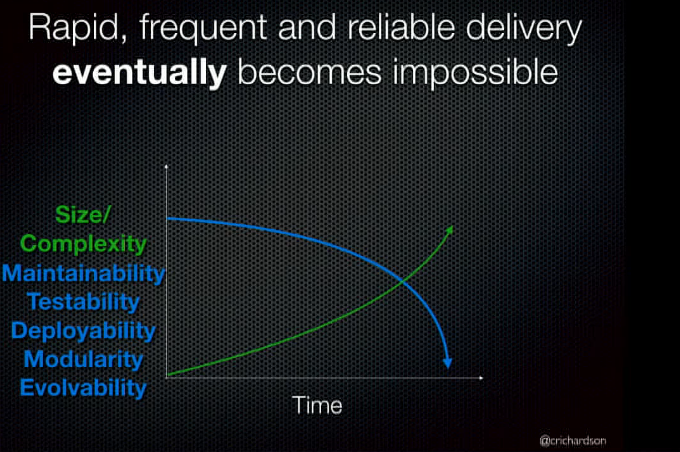

According to Marc Andreesen, Software is eating the world.
Everything is being done now by software and at the same time the market
forces that govern the industries and getting more complex and demand faster response.
Thus, the software we need to build needs to cater to these market needs.
Thus there are 2 important metrics to measure:
- Velocity
- Lead time: Time between when a developer commits code and when it is deployed in prod.
-Deployments: Number of deployments per dev per day
- Reliability
-Number of defects per change (change failure rate) - % of defects per outage
-Mean time to resolve defects - how long does it take to resolve defects from a deployment failure.
Mission critical applications tend to live for long time say like 10 years or so. The technology landscape
changes during the time so it is important to build applications so they can be modernized and can become
current. If apps are built using ancient technologies, then they cannot be modernized.
In order to rapidly, frequently and reliably deploy long-lived applications we need three things
(a triangle with each attribute in a corner)
- Process - Lean + DevOps + CI/CD
- Organization - Small, autonomous teams (small, 5-9 person cross functional)
- Software architecture - microservices
What features/attributes(ilities) should software have?
DevOps
- Testability
- Deployability
- Maintainability
Autonomous teams - need
- modularity (loosely coupled - conway's law - if you want to have loosely coupled teams,
you need to have a loosely coupled architecture)
Long lived apps -
modularity
evolvoability
Even though most apps are modular, all the modules get packaged up into a single unit. Thus, it makes it
a monolith again. Monolith is not an anti-pattern. You can have a monolithic app that is highly testable, deployable and
maintainable etc, it is not always a problem.
Successful apps have a habit of growing. Over time, the app gets bigger. The teams that work on the app grows.
Thus, the rate of change grows. We can try to modularize but everyone is essentially contributing to the same
code base.
Then app becomes a big ball of mud - haphazardly structured, sprawling, slopyy, duct-tape and bailing wire,
spaghetti code jungle. App cannot fit in mental model of developers.
